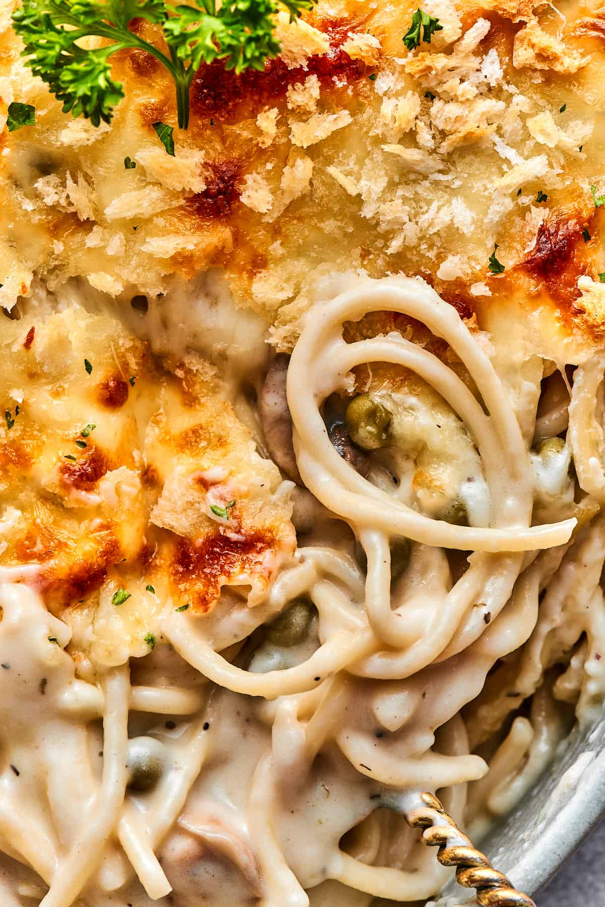

Chicken Tetrazzini

Description
yummy :)
Ingredients
- 3c. Diced chicken
- 6oz. Spaghetti
- 1/2c. Butter
- 1/2c. Flour
- 2c. Evaporated milk
- 2c. Chicken broth
- 1c. Parmesan cheese
- 4 oz. Mushrooms (optional)
- Salt and pepper, to taste
Instructions
- Heat oven to 350°f
- Boil spaghetti noodles until fully cooked
- In a skillet, melt butter and flour over medium-low heat until bubbling, stirring frequently
- Whisk evaporated milk and broth into roux
- Add spaghetti, chicken, and mushrooms (optional)
- Add mixture to 9x13 baking dish, top with parmesan cheese
- Place in oven, uncovered for 35-55 minutes, or until top is golden-brown